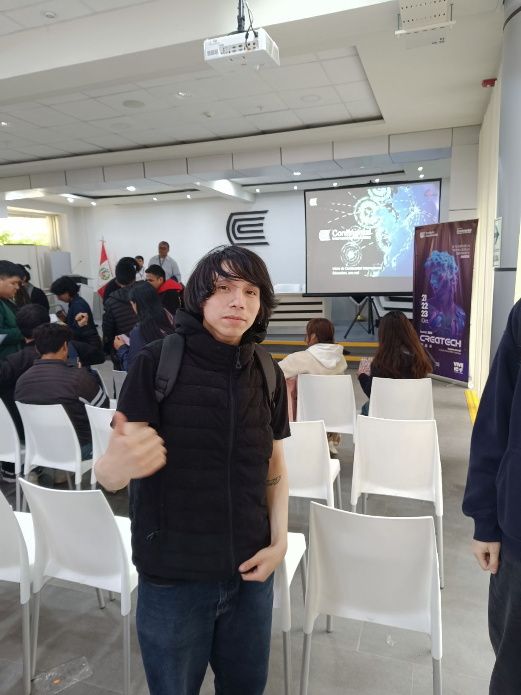
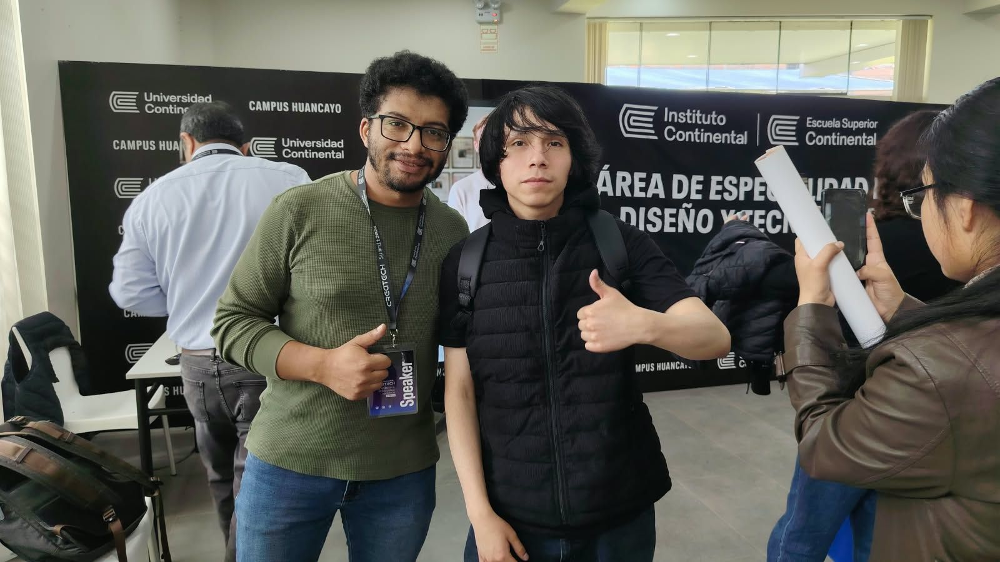
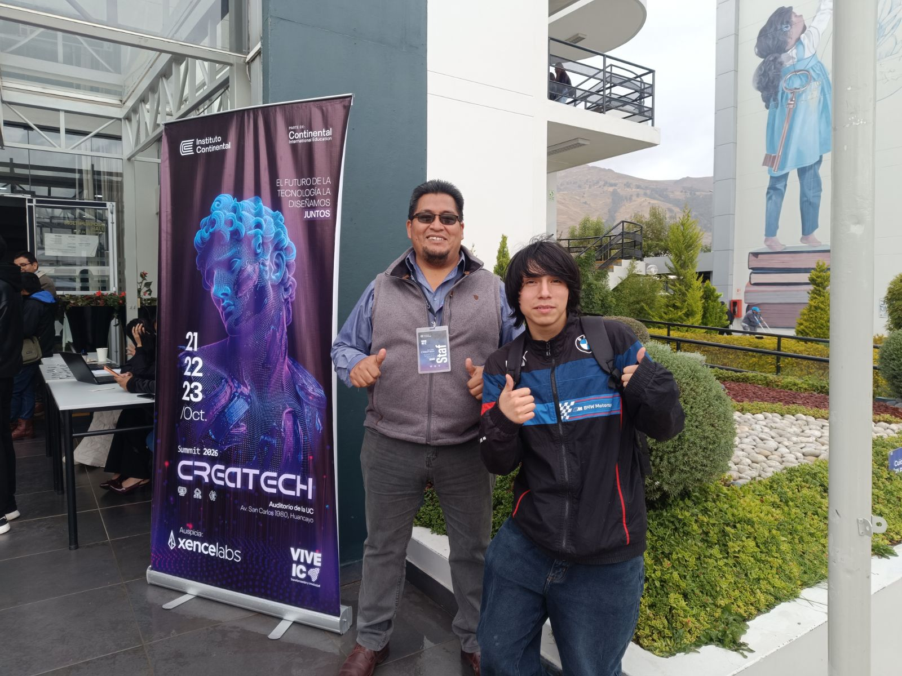
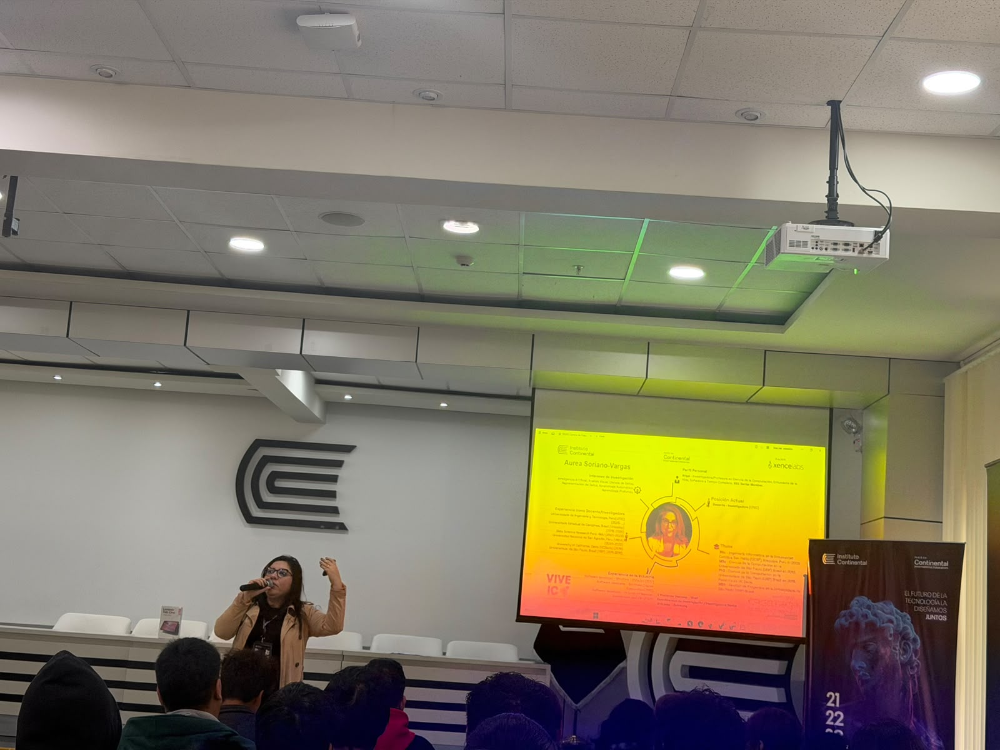
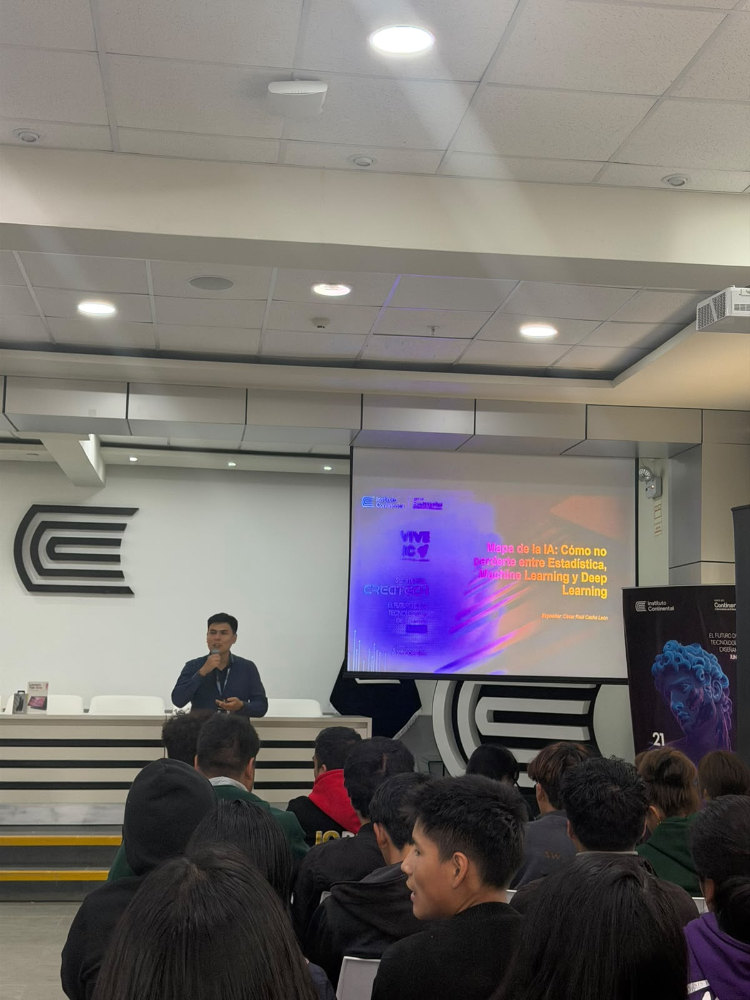
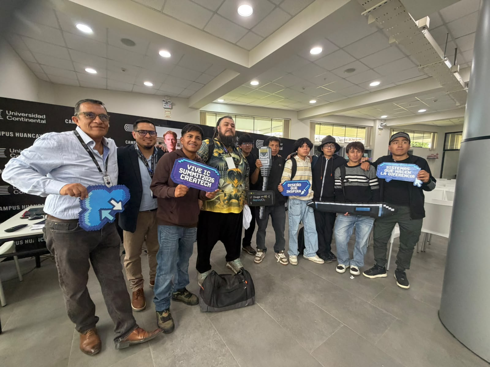

Aprendizaje Lúdico
Nuestros niños de inicial explorando formas y colores a través del juego.

Clases de Primaria
Desarrollo de competencias y trabajo en equipo en las aulas principales.

Talleres con Padres
Espacios de integración donde las familias participan activamente.

Fechas Jubilares
Celebrando nuestras tradiciones y el talento artístico escolar.

Receso y Recreación
Ambientes seguros diseñados para el sano esparcimiento físico.

Feria de Ciencias
Impulsando la curiosidad científica e investigación desde temprana edad.